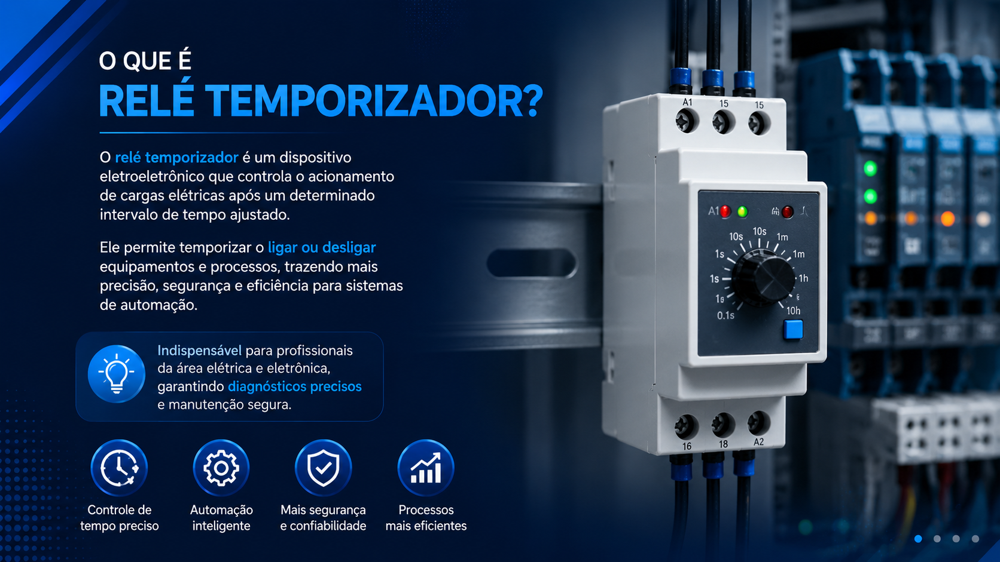
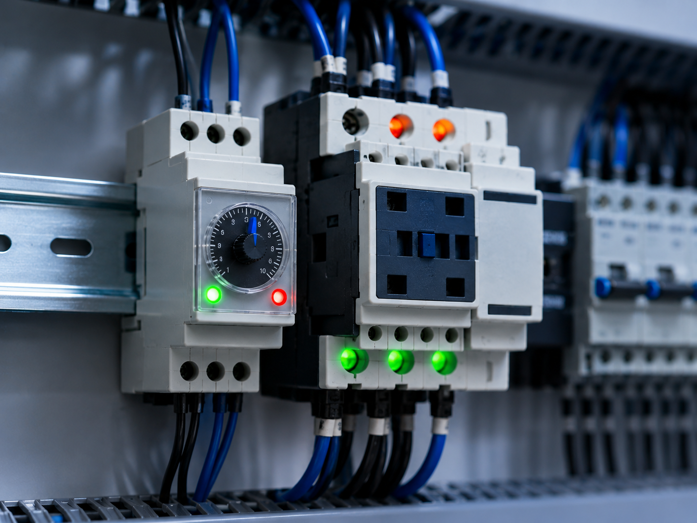
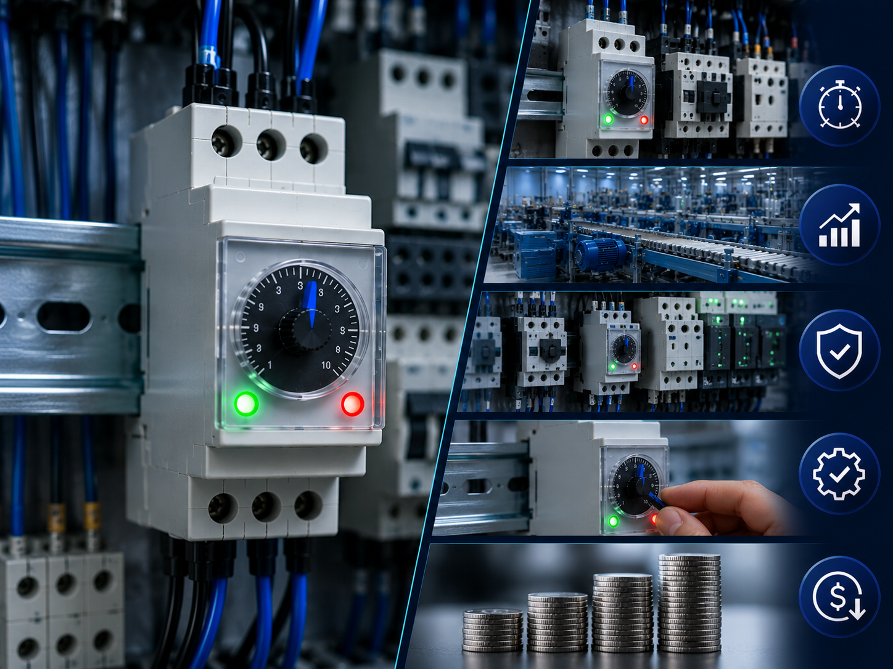

Relé Temporizador
Dispositivo de controle elétrico que abre ou fecha contatos automaticamente após um intervalo de tempo predefinido.



Conceito e Aplicação
O relé temporizador é um dispositivo utilizado para controlar o tempo de acionamento ou desligamento de circuitos elétricos em sistemas de automação industrial.
- Controla o tempo de acionamento elétrico;
- Utilizado em comandos e automação industrial;
- Permite atrasos programados em circuitos;
- Aplicado em máquinas e sistemas automatizados;
Informações Complementares



Empresas
As principais empresas que fabricam relés temporizadores são referências no setor de automação industrial e comandos elétricos. Em 2025, diversas marcas se destacam pela qualidade, precisão e confiabilidade de seus dispositivos temporizadores utilizados em sistemas industriais.
A WEG, a Siemens e a Schneider Electric são algumas das principais fabricantes de relés temporizadores utilizados em comandos elétricos e automação industrial.
WEG: Empresa brasileira reconhecida mundialmente pela fabricação de equipamentos elétricos e soluções industriais. Seus relés temporizadores oferecem eficiência, segurança e ampla aplicação em sistemas automatizados.
SIEMENS: Multinacional especializada em tecnologia e automação industrial. Desenvolve relés temporizadores utilizados em comandos elétricos, máquinas e processos industriais automatizados.
SCHNEIDER ELECTRIC: Empresa global do setor de energia e automação industrial. Fabrica relés temporizadores voltados para controle de tempo em sistemas elétricos, proporcionando confiabilidade e precisão operacional.